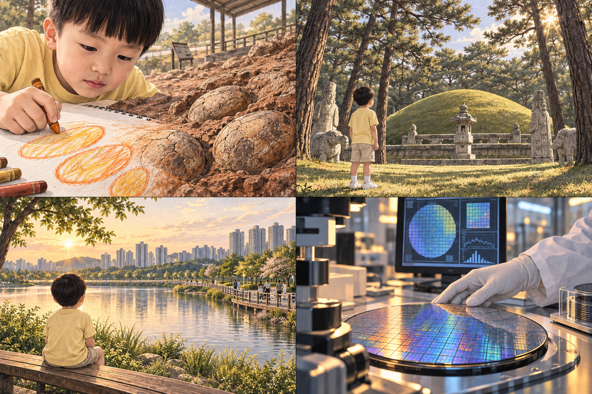
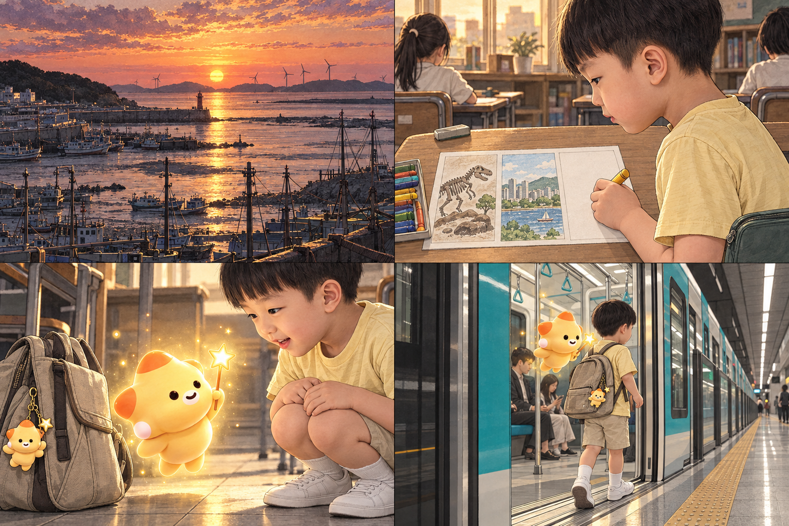
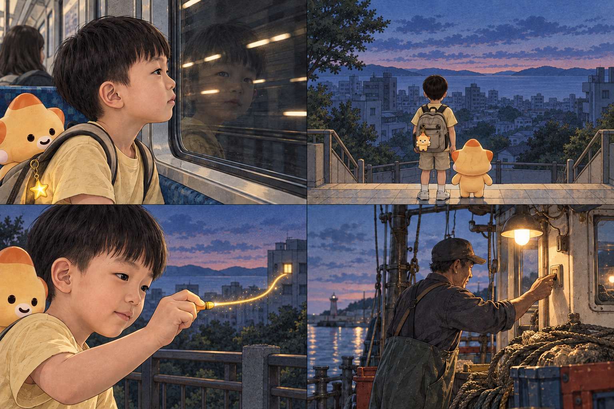
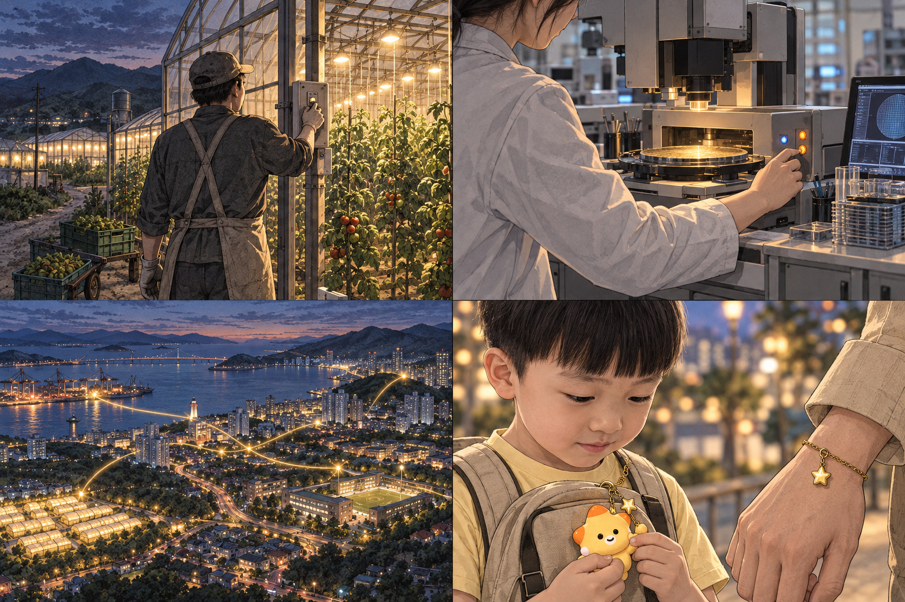
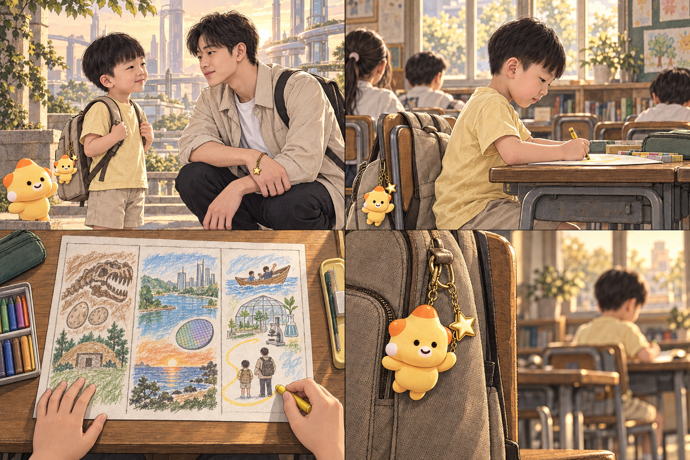

CHAPTER 01
아침의 작은 약속
가방에 달린, 아직은 평범한 친구.
영상 대응: 오늘 · 00:00–00:06
이거 하고 가야지!
CUT 01 현관의 문틀 안에 두 사람. 엄마의 얼굴보다 손과 아이의 돌아보는 시선을 본다.
엄마가 달아 준 작은 친구.
CUT 02 키링과 별을 기억시키는 클로즈업. 후반에 같은 소품을 회수한다.
화성의 어제, 오늘, 내일을 그려 오세요.
CUT 03 종이 세 칸은 과거·현재·미래. 마지막 완성된 종이와 같은 탑다운 구도.
어제는… 공룡부터!
CUT 04 가방의 키링을 배경에 남긴다. 일상적인 교실의 깊이와 조용한 집중.
CHAPTER 02
그리면, 펼쳐지는 화성
종이 위의 선이 풍경이 된다.
영상 대응: 어제와 오늘 · 00:06–00:14

오래전, 이 땅에 남겨진 이야기.
CUT 05 고정리 공룡알 화석산지의 인상을 그림과 연결한 콘셉트. 알의 둥근 선을 전환 기준으로 삼는다.
시간을 품은 숲도 그리고,
CUT 06 그림 안을 들여다보는 상상 장면. 실제 시간여행은 열차 이후. 솔숲과 봉분의 구도 참고.
우리가 걷는 오늘도 담고.
CUT 07 동탄호수공원을 모티프로 한 콘셉트. 실제 산책로와 스카이라인은 제작 시 사진으로 대조.
새로운 생각이 자라는 곳까지.
CUT 08 특정 회사의 내부가 아닌 반도체·AI 연구의 창작 공간. 회로 곡선을 그림의 선과 연결한다.
CHAPTER 03
한 칸이 남았다
아는 풍경 끝에서, 내일을 묻다.
영상 대응: 오늘 · 00:14–00:26

노을까지 담고 나니…
CUT 09 드론 시점의 전진·상승 구도안. 전곡항 쪽에서 누에섬 방향을 바라보는 콘셉트이며 정확한 조망은 사진 확인 대상.
내일은…?
CUT 10 움직임을 멈추고 여백을 준다. 빈 세 번째 칸이 이야기의 질문.
미래로 가보자!
CUT 11 키링 클로즈업 → 빛 → 코리요. 한 번의 변신보다 컷 연결로 구현할 장면.
둘은 동탄역에서 열차에 올랐어요.
CUT 12 탑승 차량은 GTX-A로 통일할 계획. 이 그림은 외형 콘셉트이며 정확한 차량·역 안내는 레퍼런스로 교체. SRT는 별도 환승 안내.
CHAPTER 04
내일로 가는 선
창밖의 어둠을 지나, 첫 빛이 켜지다.
영상 대응: 상상 속 미래 · 00:26–00:34

익숙한 불빛이, 낯선 선으로 바뀌었어요.
CUT 13 현실의 창밖은 터널. 키링이 빛나는 순간부터 시간여행 판타지로 전환.
아직 다 그려지지 않은 내일.
CUT 14 문틀로 도시를 한 번 더 감싼다. 미완성 그림의 여백이며 폐허를 뜻하지 않는다.
서진이는 작은 선 하나를 그었어요.
CUT 15 아이의 손 동작을 먼저 만들고 금빛 궤적과 창문 점등은 편집으로 합성.
바다에서도,
CUT 16 손의 행동 → 공간의 빛. 빛이 켜지는 이유를 사람에게 둔다.
CHAPTER 05
저마다의 자리에서
하나의 빛이, 여러 사람의 빛과 만나다.
영상 대응: 상상 속 미래 · 00:34–00:40

들판에서도,
CUT 17 어부·농부·연구자 컷을 비슷한 크기로 맞춘다. 각자 자기 자리에서 하는 일.
새로운 생각이 자라는 곳에서도.
CUT 18 장비를 켜는 한 동작. 여기서는 얼굴이나 특정 기업보다 손과 일터를 보여준다.
저마다의 작은 빛이 도시를 밝히고 있었어요.
CUT 19 여러 출발점의 빛. 현실의 전력망을 설명하는 장면이 아닌 시민의 기여를 표현한 상상.
어? 나랑 같은 별…
CUT 20 이 컷에서는 청년의 얼굴을 숨긴다. 앞의 가방 소품이 정체를 알려준다.
CHAPTER 06
그곳에서 만난 나
우리가 그리는, 다음 장면.
영상 대응: 만남과 귀환 · 00:40–01:00

미래의… 나?
혼자 다 안 켜도 돼.
네 자리에서 하나만 켜면 돼.
CUT 21 캐릭터 시트의 성인 얼굴. 별 → 얼굴 → 두 사람으로 연결하고 대사 끝에 호흡을 둔다.
다시, 내일 칸 앞에 앉았어요.
CUT 22 동일한 교실·의상·가방. 어른과의 대사를 서둘러 자르지 않고 귀환 장면까지 이어갈 수 있다.
내일은… 같이 그리는 거구나.
CUT 23 마지막 한 획만 그리게 한다. 완성된 종이 바탕은 따로 준비해 장면 앞뒤를 맞춘다.
우리의 내일을 함께 그려요.
CUT 24 처음의 소품으로 닫는다. 로고는 다음 흰 카드에서 원본 그대로 보여준다.

{kind=link}
{kind=link}
{kind=link}
{kind=link}
{kind=link}
{kind=link}